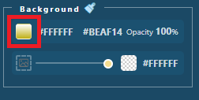
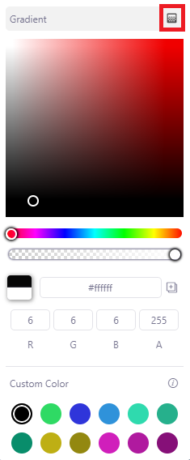
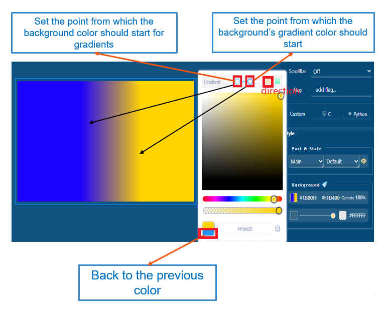

How to set the gradient color
Gradient color is a commonly used style in UI design. This example describes how to set the gradient color for a widget through a color picker.- To open the color picker window, click the color setting icon.Figure: Color setting icon

- To enable the gradient color, click the highlight icon.Figure: Enable the gradient color

- To enable the gradient color, click the highlight icon.
- Set the point from which the background color should start for gradients: The position from which the gradient starts.
- Set the point from which the background’s gradient color should start: The position to which the gradient finishes.
- Back to the previous color: Resume to original color.
Figure: Color picker window